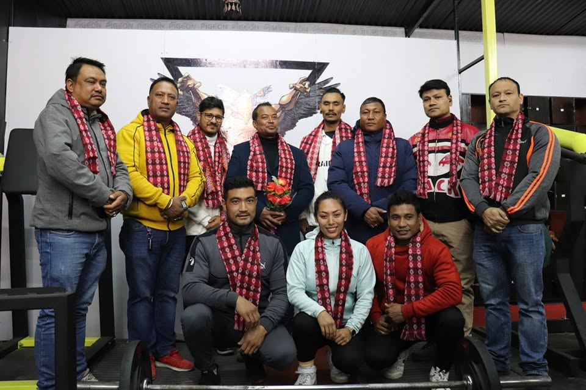

01
IDENTITY & SCALE
Who are you, and how far has Gym Junkies come?
Binod Gautam is the owner and operator of Gym Junkies. The gym has been running since 2022 and, by his estimate, has trained around 600 people so far.
THE INTERVIEW
Binod Gautam on independence, investment, competition, mistakes and what it really takes to build a local fitness business.
The questions below are edited for clarity and aligned with the meaning of the recorded answers. Responses are concise summaries of the interview, not verbatim quotations.
IDENTITY & SCALE
Binod Gautam is the owner and operator of Gym Junkies. The gym has been running since 2022 and, by his estimate, has trained around 600 people so far.
THE DECISION
After working at several gyms in Bhaktapur, Gautam felt the job was not improving his financial position enough. He chose entrepreneurship to create independent income and build a gym around his own way of working. He also notes that competition in the sector is now rising.
CUSTOMER NEED
In Gautam’s view, changing food habits and lifestyles have made exercise more important. He sees the gym serving a wide market—from students who have completed SEE to people around sixty years old.
This is the interviewee’s perspective and should not be treated as medical guidance.
DIFFERENTIATION
The gym competes through affordable pricing and personal attention. Gautam does not believe every customer should receive the same routine; he first tries to understand each person’s needs, limitations and goals.
CAPITAL & COSTS
The startup investment was substantial. Gautam could not finance it alone, so he added a business partner. The costs continue after launch: maintenance, machine servicing, refreshments and miscellaneous operating expenses all require regular attention.
PRICE & QUALITY
The monthly fee is around NPR 2,000. More competitors make that price harder to sustain because customers naturally seek cheaper options. Gautam’s concern is to remain affordable without compromising the quality of the equipment, guidance or service.
CHALLENGE & MISTAKE
The biggest challenge was arranging the initial capital. Looking back, Gautam says one mistake was not doing enough to socialise the brand: promotion, outreach and consistent video content could have helped more people discover the gym earlier.
WHAT COMES NEXT
Space is the current constraint. The immediate priority is to expand the training area and then add better-quality equipment, creating more room and a stronger experience for members.
ADVICE TO FOUNDERS
Do not open casually in any available place. Choose a suitable location, secure enough space, organise the facility properly and invest in good equipment. Preparation before launch shapes both the customer experience and the business’s ability to grow.
ENTREPRENEURSHIP TAKEAWAYS
Experience lowers uncertainty. Years on the gym floor helped Gautam recognise the customer need and the realities of daily operations.
Capital structure matters. A partner made a high-investment idea possible when solo funding was not enough.
Low price is not the whole value proposition. Personal attention and service quality make affordability sustainable.
Marketing cannot wait. Gautam’s reflection on socialising the brand shows that visibility must grow alongside the operation.
Plan for the next constraint. For Gym Junkies, expansion now depends on more space and improved equipment.
THE CONCLUSION
Gautam’s journey shows that building a business requires experience, investment, customer attention, cost control and continuous learning. By balancing affordability with quality—and planning its next stage—Gym Junkies offers a practical example of local entrepreneurship in motion.
Back to the feature
Editorial note: This two-page feature was prepared from the recorded interview with Binod Gautam, the final corrected subtitle files, the supplied question list and project photographs. Answers have been condensed and lightly edited for clarity while preserving their intended meaning.